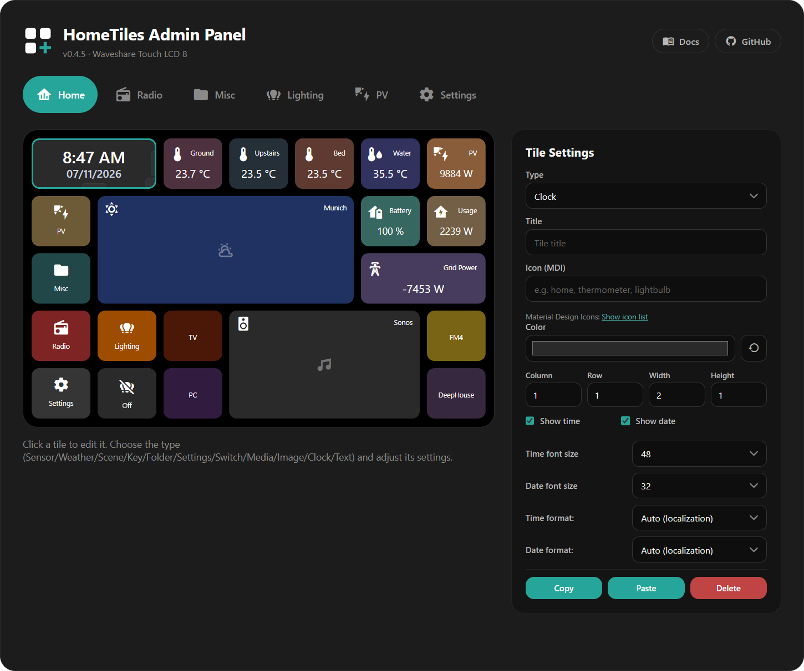
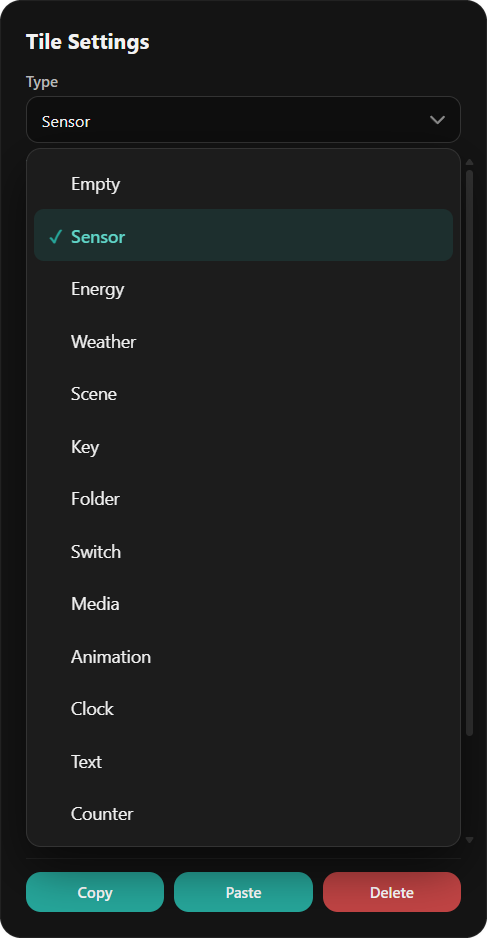
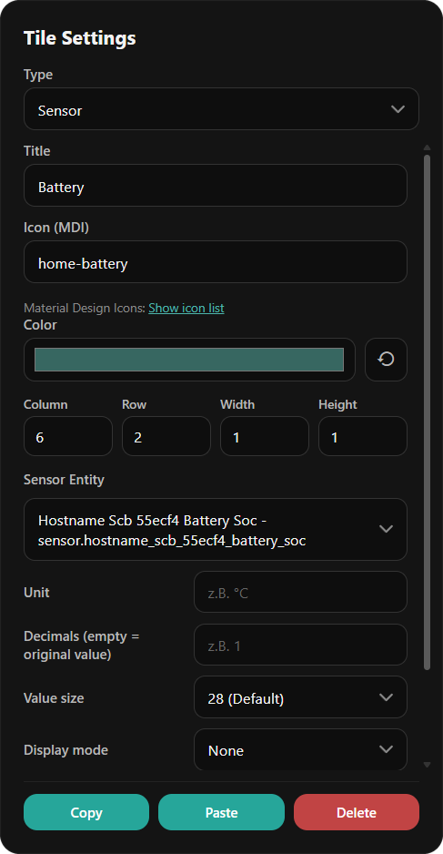
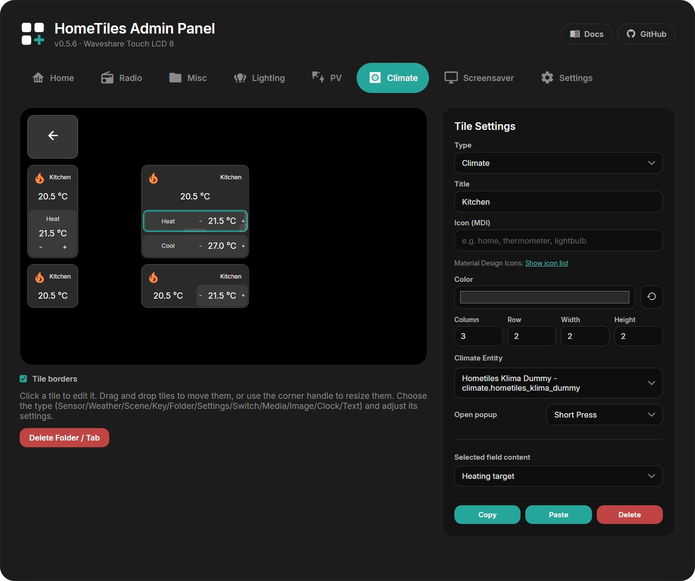
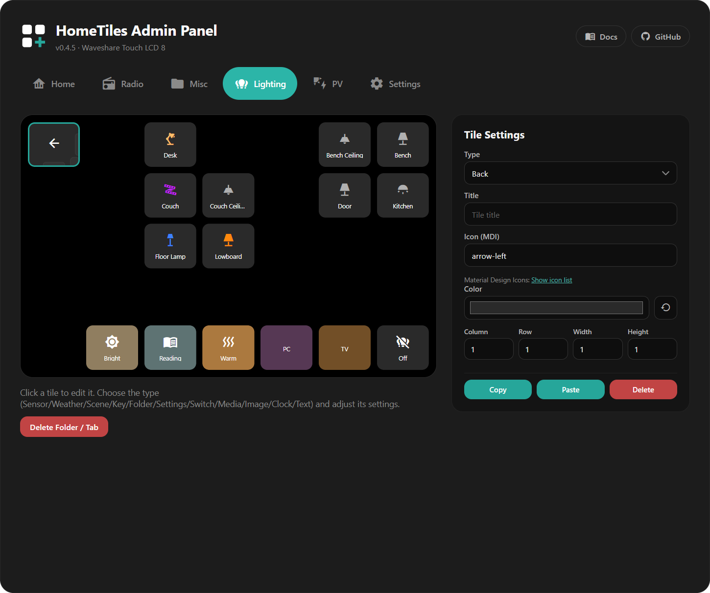
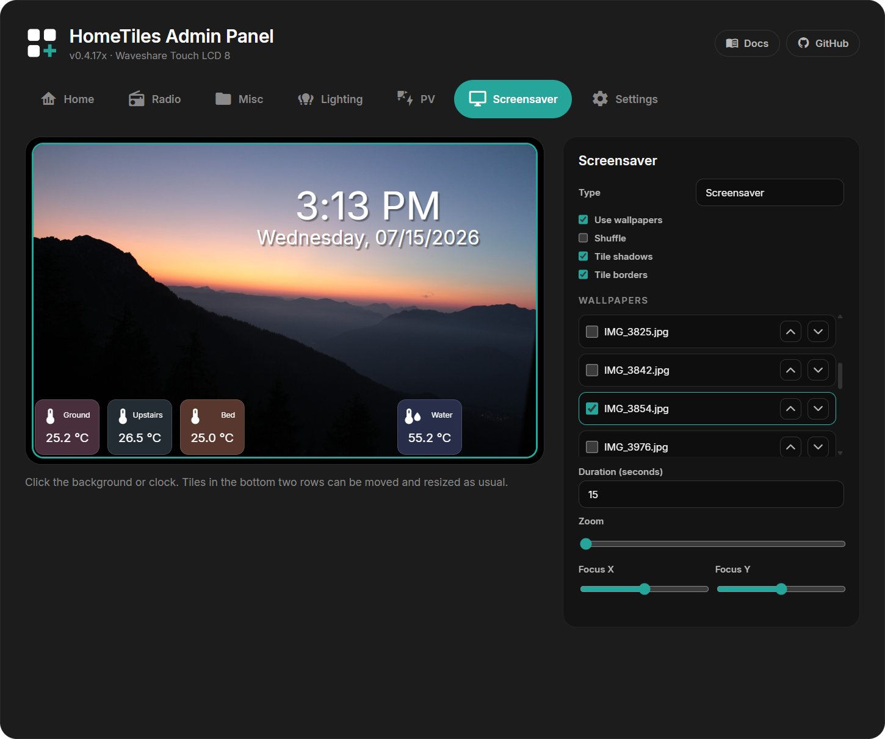
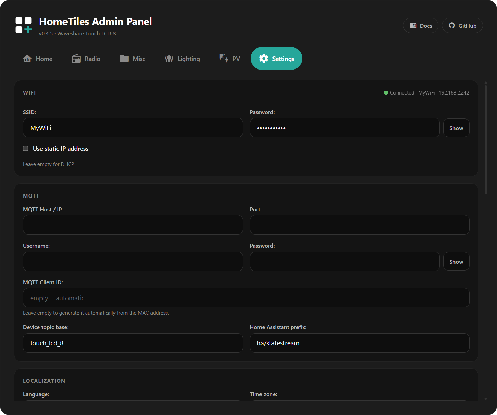
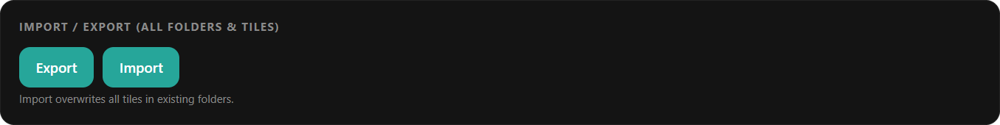
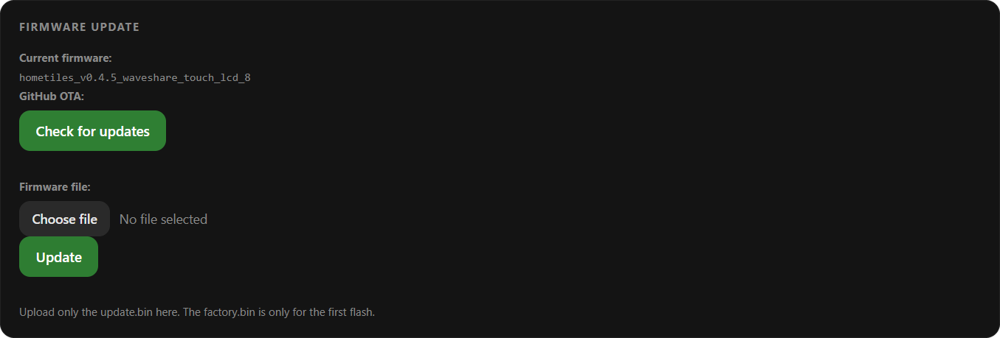

Web Admin Panel
Every device runs its own admin panel — the whole dashboard is configured in the
browser, nothing on the device itself. Open http://<display-ip>/ (the IP is shown
on the device under Settings → WiFi, and in Home Assistant on the device page).

The layout mirrors the device: on the left a live preview of the tile grid with one tab per folder, on the right the Tile Settings panel for the selected tile.
Changes save automatically
There is no save button for tiles. Every edit — title, color, position, type — is applied and stored as you make it, and the display updates within a second or two.
Creating a Tile
- Click any empty cell in the grid. The Tile Settings panel opens for it.
- Pick a Type — the cell immediately becomes that tile.
- Fill in the fields for that type (they change with the type — a Sensor tile asks for an entity, a Clock tile for time/date formats, and so on).

Every tile shares the same base settings:
| Setting | What it does |
|---|---|
| Title | Label shown on the tile (optional) |
| Icon (MDI) | Any Material Design Icon by name, e.g. thermometer — the Show icon list link opens the catalog |
| Color | Tile background; the reset arrow returns to the type's default |
| Column / Row / Width / Height | Position and size on the grid |
Below that come the type-specific fields. For a Sensor tile, for example: the Home Assistant entity, unit, decimals, value size, and an optional gauge display mode.

An overview of all tile types and what each one needs is on the Tile Types page.
Editing Climate Mini-Tiles
A Climate tile contains its own slot grid. Click a mini-tile directly in the preview to edit its content, or drag it to another slot. Empty slots remain selectable, and dashed hover outlines show whether the next click or drag targets the parent tile or a mini-tile.
Available content includes current temperature, current humidity, target temperature, separate heating and cooling targets, target humidity, and mode. Automatic picks content supported by the selected entity. The web admin does not invent unavailable controls, and its preview uses the same layout rules as the on-device renderer.
When the parent tile is resized, the slot grid adapts immediately and shows the new layout during the drag. Explicitly placed mini-tiles are preserved wherever they still fit.

Moving, Resizing, Copying
- Move — drag a tile to another cell; a placeholder shows where it will land.
- Resize — drag the handles on the tile's right/bottom edge, or type exact values into Width / Height.
- Copy / Paste — copy a configured tile and paste it onto another cell (also across folders). Delete clears the tile back to an empty cell.
Folders
Set a tile's type to Folder and a sub-page is created automatically: it appears as a new tab in the admin panel, and on the device the tile opens that page — with a back tile placed in the top-left corner for you.

The folder tab has a Delete Folder / Tab button that removes the sub-page and all tiles on it. The back tile can be restyled (icon, color) but keeps its function.
Screensaver Editor
The dedicated Screensaver tab is a live preview of the separate screensaver layout. Click the background to configure the slideshow, click the clock to change its content and alignment, or select one of the slots in the bottom two rows to configure a tile. The clock can be moved and resized freely; screensaver tiles use the same drag, resize, copy, paste, color, and opacity controls as the normal grid.

The editor requires JPEG images in /images on a microSD card. The complete setup,
all slideshow options, automatic activation, and media-tile performance notes are
documented in the Screensaver guide.
The Settings → Display section also contains a global Subtle tile borders option. It applies to every tile on the normal dashboard and its web previews. The screensaver keeps its own independent Tile borders option.
Device Settings
The Settings tab configures the device itself — the same options as in the on-device settings, plus a few admin-only ones:
- Network — connection status, WiFi credentials, and one optional static IP profile shared by WiFi and Ethernet. Ethernet-capable builds also let you choose which connection type is used after restart
- MQTT — broker host, port, credentials, topic base. Normally filled automatically by pairing; only touch this for a manual setup
- Localization — language, time zone, time and date format

Unlike tile edits, this form uses the green Save button in the footer — next to it is the device restart button.
Local Hardware I/O
The I/O tab assigns only the profile-whitelisted pins exposed by the current firmware target. Select + Switch for an output or + Temperature for a DS18B20 input. Each compact row shows the name, resulting local entity ID, GPIO, and the controls supported by that channel.
I/O assignments use separate Save and Restart buttons. A normal Save applies the new runtime configuration immediately and refreshes the entity selectors used by normal and screensaver tiles. Restart does not save pending edits; it only reboots the panel so the configured startup state can be checked.
Local Switch tiles control their output directly without an MQTT round trip.
HomeTiles Bridge v0.6.32 or newer additionally creates matching Home Assistant
switch and sensor entities on the panel device.
See Local Hardware I/O for supported pins, onboard relay behavior, DS18B20 wiring, and electrical safety notes.
Import / Export
Exports the complete dashboard — all folders, tiles, and the screensaver layout — as a single JSON file; import restores it. Useful as a backup before bigger layout changes, or to copy a layout to a second device. Older exports without a screensaver section remain supported and leave the current screensaver configuration unchanged. Local Hardware I/O assignments are deliberately device-specific and are not included in this dashboard file.

Warning
Import overwrites the folders, tiles, and screensaver data contained in the file.
Screenshot & Diagnostics
Create & Download Screenshot saves a JPEG of the current screen to the microSD card and downloads it in the browser (requires a card).
Download crash log fetches crashlog.txt: whenever the display crashes or
restarts unexpectedly, the firmware appends the reset reason and a crash summary
(crashed task, program counter, registers) to this file on the next boot. If no
crash has ever been recorded, the button just says so.
After a crash the firmware also keeps a core dump — a full snapshot of the crash — in a dedicated flash partition. When one is stored, the section shows a summary line plus buttons to download or delete it.
Found a crash? Please report it — the crash log and core dump are exactly what's needed to fix it.
Firmware Update
The Firmware section checks GitHub for new releases and installs them, or takes a
manually uploaded update.bin. Details on all update paths are on the
Firmware Updates page.

File Manager
If a microSD card (FAT32) is inserted, a file manager section appears: upload one or several selected files, download, rename, delete, and create folders. The card is optional for the normal dashboard, but required for screenshot export and screensaver images.